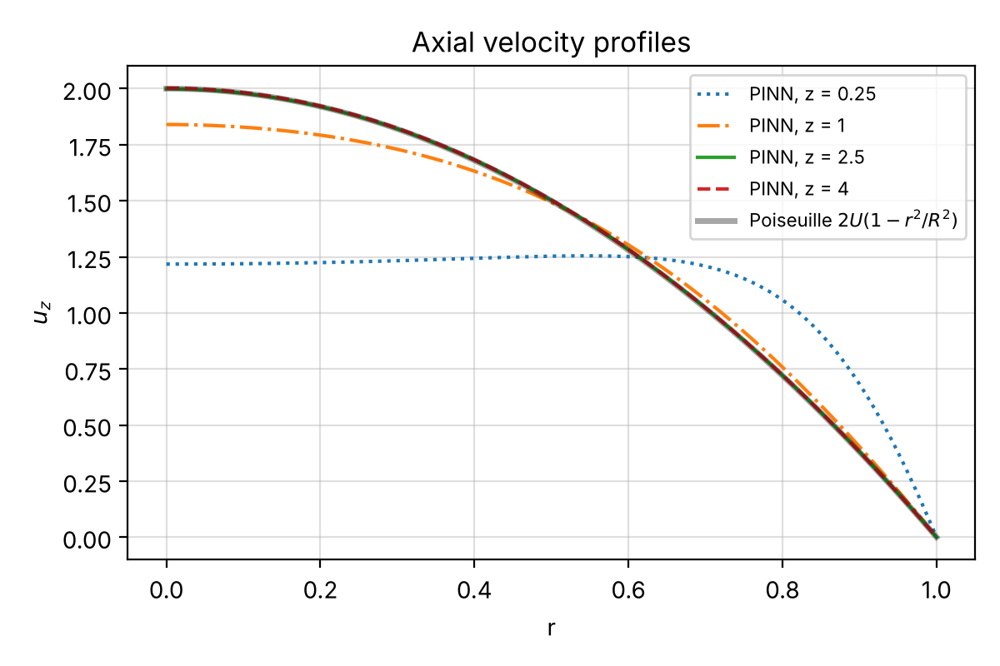
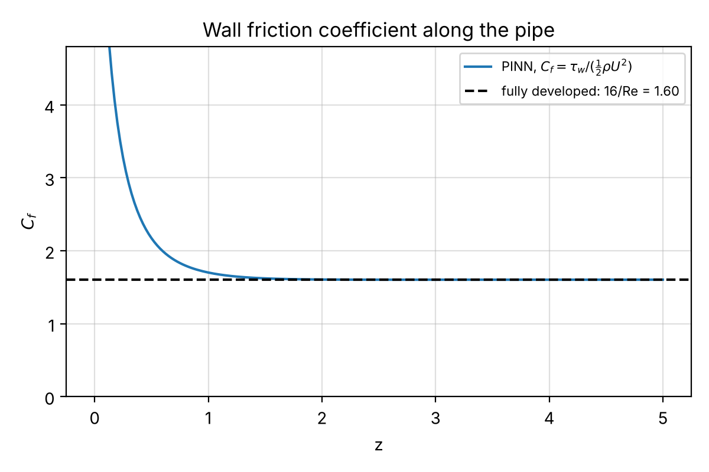
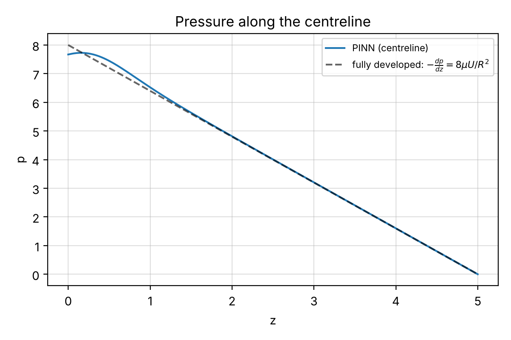

03Scientific Machine Learning
3D PINN for Pipe Flow
A physics-informed neural network for the 3D Navier–Stokes equations in a pipe, with exact wall and outlet conditions, written from scratch in NumPy with its own automatic differentiation.

Overview
Can a PINN recover the development of laminar flow in a pipe from the governing equations alone, and how close does it get to the exact fully developed solution?
Approach
- Inputs (r cos θ, r sin θ, z), so every field is periodic in θ and regular on the axis; residuals in Cartesian form.
- No-slip and outlet-pressure conditions imposed exactly by distance functions; a blunt inlet profile that is compatible with the wall.
- Re = 10, chosen so that the flow develops inside the pipe and a valid exact reference exists.
- 4 × 50 tanh network; 3000 Adam iterations, then four L-BFGS rounds on resampled points.
Results
| Hagen–Poiseuille, centreline velocity at z = 4 | 2.002 vs 2 (0.10 %) |
|---|---|
| Hagen–Poiseuille, pressure gradient | −1.6026 vs −1.6 (0.16 %) |
| Friction coefficient vs 16/Re | 1.6032 vs 1.6 (0.20 %) |
| Mass conservation along the pipe | Q/(πR²U) between 0.9992 and 1.0016 |
| Entrance length vs Durst et al. (2005) | 1.75 vs 1.83 (4.6 %) |
| Geometry | R = 1, L = 5 |
| Reynolds number | 10 |
| Network | 4 hidden layers × 50 neurons, tanh |
| Training | ≈ 40 min on two CPU cores |
| Residual RMS, z > 2 | 0.0052 |
From the report





